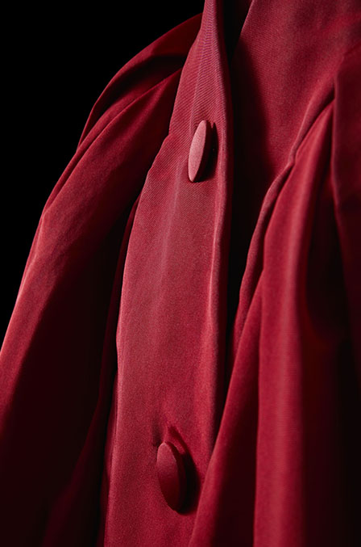

Croquis
Croquis du modèle Zémire réalisé par Christian Dior avec un échantillon de soie noire.
Collection Dior Héritage, Paris


Croquis de presse
Collection Dior Héritage, Paris

Page d’échantillons
Le modèle original de Zémire était noir.
Chaque modèle a sa page qui décrit la tenue, l’atelier et la cliente. Le travail est donc également réparti entre les ateliers et les mannequins ont le temps de se changer entre les présentations.
Collection Dior Héritage, Paris

Zémire est l’héroïne de l’opéra-comique Zémire et Azor (1771) d’André Grétry, qui a inspiré le film de Jean Cocteau La Belle et la Bête (1946).
© Jacques Rouchon


*
Ci-dessus : Le « Y » de la ligne Y
* Photos Laziz Hamani
Ci-dessus : La jupe ample doit son bouffant à plusieurs épaisseurs de jupons dégradés.

Ci-dessous : La manche ajustée et le corsage sont taillés d’une pièce. Des goussets au creux de l’aisselle assurent l’aisance des mouvements.